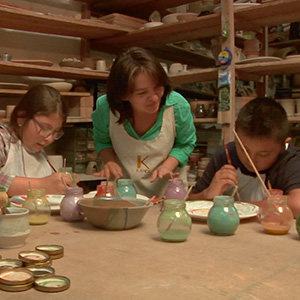
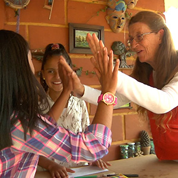
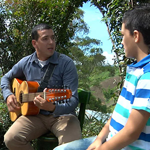

-
 Capítulo 2 Ceramista
Realizar una taza de barro con los ojos cerrados y hacer otro en el torno, serán algunos de los retos.
-
 Capítulo 3 Vitralista
Los retros están relacionados con el arte del viralismo, las niñas deben superarlos para obtener el título de mosaiqueras.
-
 Capítulo 4 Trovadores
Hay tres retos que llevarán a los chicos a superar sus miedos y sacar toda su creatividad e ingenio.
-

Capítulo 4
Reto 1
Reto 2
Reto 3
Reto 4